Diarrhée virale = mécanisme sécrétoire : sécrétion active d'électrolytes et d'eau par les cellules épithéliales de l'intestin grêle (≠ mécanisme invasif/glairo-sanglant des bactéries).
Les GEA virales en chiffres
> 50 % des gastroentérites ; évoluent par épidémies.
2 millions de décès / an (enfants, surtout PVD).
Infection localisée au tube digestif.
% selon : hôpital vs communautaire · enfant vs adulte · âge de l'enfant · région du monde.
🔑 5 familles de virus de GEA à connaître : Rotavirus (Reoviridae) · Norovirus/Sapovirus (Caliciviridae) · Adénovirus 40/41 (Adenoviridae) · Astrovirus (Astroviridae) · Virus Aichi (Picornaviridae). + Picobirnavirus. Rotavirus & Norovirus = les 2 majoritaires.
2 · Classification des 3 principaux
Famille
Capside
Enveloppe
Génome
Exemples
Reoviridae
icosaédrique
nu
ARN double brin, segmenté
Rotavirus
Caliciviridae
icosaédrique
nu
ARN simple brin (+)
Norovirus, Sapovirus
Adenoviridae
icosaédrique
nu
ADN double brin linéaire
Adénovirus 40, 41
Point commun des 3 : capside icosaédrique + virus nus → résistance dans le milieu extérieur, transmission féco-orale facile.
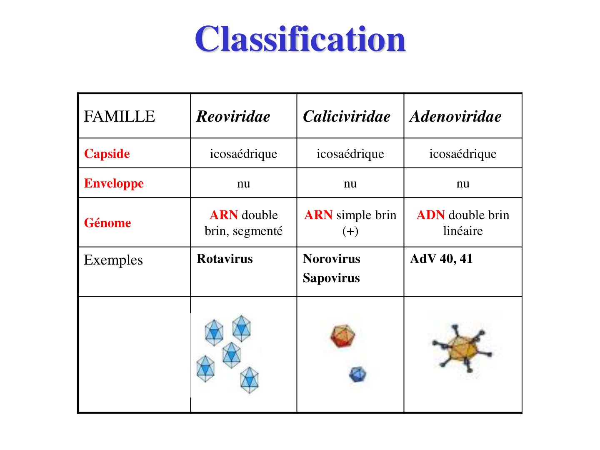
Tableau du cours — les 3 familles côte à côte : toutes icosaédriques et nues ; ce qui les sépare = le génome (Reo : ARN db segmenté ; Calici : ARN sb (+) ; Adeno : ADN db linéaire). Les virions illustrés (en bas) montrent la capside icosaédrique nue.
Épidémie annuelle : hiver, pic décembre–janvier (zone tempérée) ; saison des pluies en zone tropicale.
40 % des diarrhées de l'enfant < 5 ans. Formes symptomatiques surtout 3–6 mois → 2 ans.
Avant 3 mois : protection contre les formes graves par les Ac maternels.
France : ≈ 155 000 cas/an, 14 000 hospit., 8–17 décès ; nosocomial en pédiatrie.
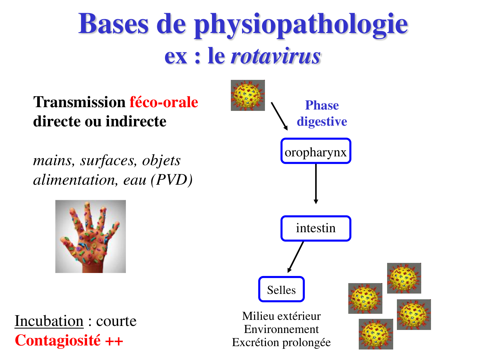
Bases de physiopathologie (ex. rotavirus) — transmission féco-orale directe ou indirecte (aliments, eau, coquillages) ; le virus infecte les entérocytes de l'intestin grêle → mécanisme sécrétoire (sortie active d'électrolytes + eau) responsable de la diarrhée aqueuse profuse, puis excrétion virale dans les selles.
Maladie — GEA
Incubation 1 à 2 jours ; contagiosité ++, excrétion prolongée (1010 particules/g de selles).
Diarrhée aqueuse profuse (syndrome cholériforme, « eau de riz »), non glairo-sanglante, ± vomissements / douleurs abdo, pas / peu de fièvre.
Évolution favorable en 3–5 j sous réhydratation correcte ; nombreuses formes pauci/asymptomatiques et ré-infections (plusieurs types antigéniques).
Gravité chez le nourrisson = déshydratation +++ (perte de poids > 10 % en quelques heures).
Réhydratation : SRO (solutés de réhydratation orale) ou voie IV ; hygiène +++.
Vaccination = virus vivant atténué, voie orale :
Rotarix® (souche humaine, monovalent) ou Rotateq® (humain-bovin réassortant, pentavalent).
Nourrissons de 6 à 24/32 semaines, 2 ou 3 administrations.
4 · Calicivirus & Adénovirus
Virus
Caractéristiques
Épidémiologie / pouvoir pathogène
Diagnostic (selles)
Caliciviridae Norovirus, Sapovirus
ARN simple brin (+), capside icosaédrique, virus nu
Épidémies à tout âge ; origine alimentaire ou hydrique ; dans les collectivités
RT-PCR + recherche d'Ag (agglutination, EIA)
Adenoviridae sérotypes 40 & 41
ADN double brin linéaire, capside icosaédrique, virus nu
Faible proportion des GEA du jeune enfant
Recherche d'Ag (agglutination, EIA) + PCR
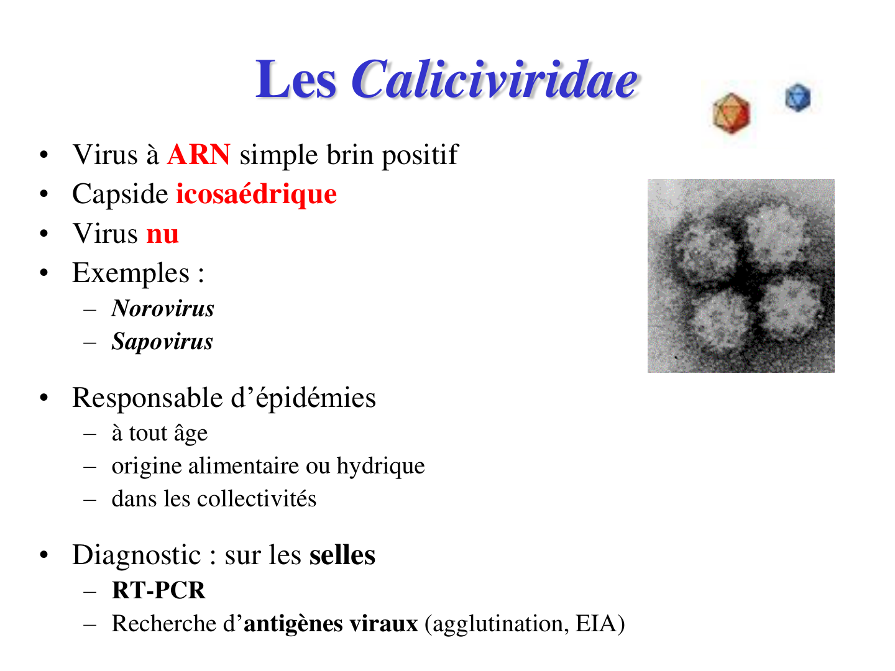
Caliciviridae (Norovirus) au cours — virus nu, capside icosaédrique, ARN sb (+). 1re cause d'épidémies de GEA à tout âge en collectivités (gastros « hivernales » épidémiques, origine alimentaire/hydrique).
Partie 2 · Picornaviridae
5 · Carte d'identité des Picornaviridae
Structure : 27 à 30 nm ; virus nus ; capside icosaédrique (4 protéines : VP1 à VP4) ; génome ARN simple brin, polarité (+), 7,5 kb.
Résistance milieu extérieur : inactivés par formol, UV, eau de Javel ; VHA résistant au chlore (piscines) et dans l'eau de boisson.
Transmission féco-orale directe ou indirecte ; multiplication sur toute la hauteur de la muqueuse digestive ; élimination dans les selles.
Aussi transmission respiratoire.
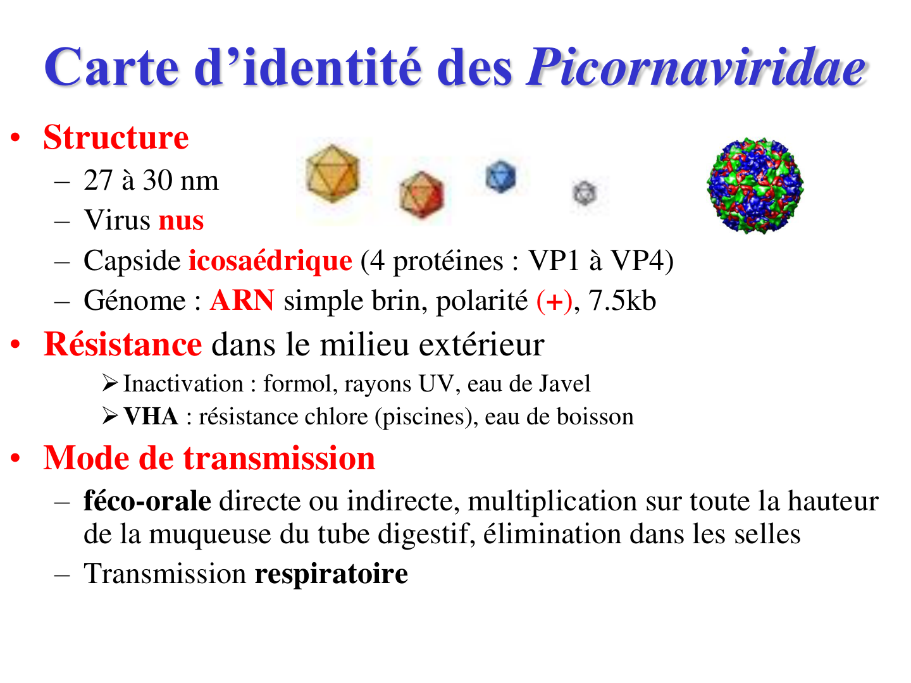
Carte d'identité Picornaviridae — petite capside icosaédrique nue (≈ 27–30 nm) faite de 4 protéines VP1–VP4, protégeant un ARN sb (+) de 7,5 kb (exemple : Poliovirus).
📚 68 genres, 159 espèces. Genres pathogènes pour l'homme : Enterovirus & Rhinovirus (Poliovirus 1-2-3 · Coxsackie A [23 sérotypes] & B [6] · EV 68-71 · Echovirus [28] · Rhinovirus A/B [100]) · Hepatovirus = virus de l'hépatite A · Parechovirus · Virus Aichi (Kobuvirus).
6 · Pouvoir pathogène des Enterovirus
Beaucoup d'infections asymptomatiques. Maladie généralisée = diffusion systémique → SNC, corne antérieure de la moelle, méninges, cœur, peau, conjonctive…
Cycle viral du poliovirus (féco-oral) en 4 phases : ① digestive (oropharynx → intestin → excrétion dans les selles) → ② lymphatique (amygdales, plaques de Peyer) → ③ sanguine (virémie) → ④ neurologique (corne antérieure de la moelle). ⇒ poliomyélite antérieure aiguë chez seulement 1–2 % des infectés : paralysies flasques, formes frustes, séquelles.
8 · Les deux vaccins polio (VPO vs VPI) & éradication
Critère
VPO (Sabin) — oral
VPI (Salk) — injectable
Souche vaccinale
Virus vivant · multiplication dans l'organisme · diffusion à l'entourage · circulation de la souche → réversion vers le caractère sauvage, interférence avec les autres Enterovirus
Virus inactivé
Innocuité
Non : poliomyélite post-vaccinale possible. CI : femme enceinte, immunodéprimé (et son entourage)
Oui · pas de contre-indication
Immunité
Générale + immunité intestinale (efficacité ++)
Générale, mais pas d'immunité locale (un vacciné peut héberger et excréter du virus)
Administration
Orale (facilité, campagnes de masse)
Injectable (hygiène) · coût, association possible (D-T-Coq-Hib-VHB…) · rappels réguliers
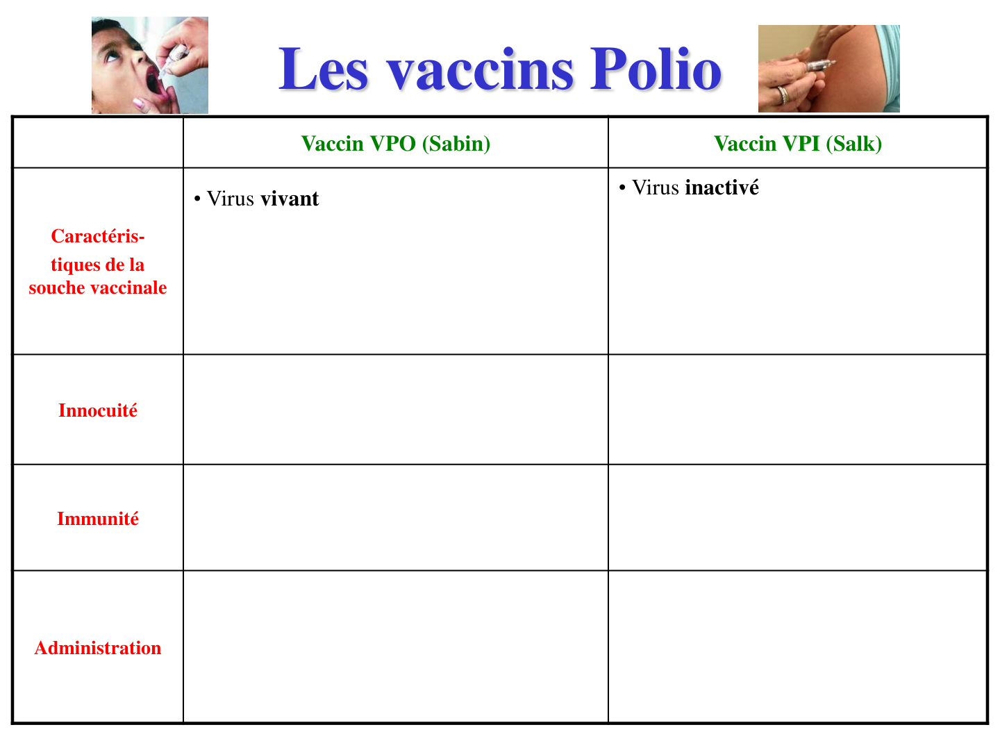
Tableau du cours — VPO vs VPI. Le VPO oral (vivant) donne une immunité intestinale (idéal pour bloquer la circulation en campagne de masse) mais peut réverter et donner des polios post-vaccinales / cVDPV. Le VPI injectable (inactivé) est sûr mais sans immunité locale.
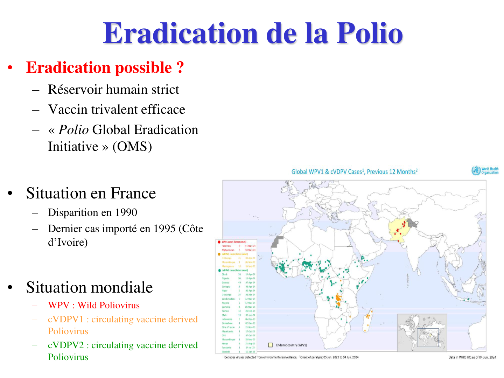
Éradication de la polio — possible car réservoir humain strict + vaccins efficaces (programme GPEI/OMS). France : disparition en 1990, dernier cas importé en 1995 (Côte d'Ivoire). Surveillance mondiale : WPV (virus sauvage) vs cVDPV (dérivés du vaccin VPO).
Partie 3 · Arboviroses & fièvres hémorragiques virales
9 · Définitions
Arbovirus = ARthropod BOrne Virus.
Arbovirose : maladie due à un virus transmis par la piqûre d'un vecteur arthropode (= définition par le mode de transmission). Le virus se multiplie obligatoirement chez le vecteur.
Fièvre hémorragique virale (FHV) : maladie causée par un virus présentant des signes hémorragiques (= définition clinique).
Les deux notions se recoupent partiellement : certaines sont des arboviroses sans FH (Zika, West-Nile, chikungunya), d'autres sont à la fois arbovirose et fièvre hémorragique (dengue, fièvre jaune), d'autres sont des FH non transmises par vecteur (Ebola, Lassa, Hantavirus = inhalation/contact).
Après repas sanguin infectant : incubation extrinsèque chez le moustique (le virus s'y multiplie avant d'être transmissible).
Chez l'homme : virémie ≈ J0 → J5–7 (= fenêtre de contagiosité pour le moustique).
Cas importé (virémie au retour de voyage) → si moustique compétent local pique → cas autochtone.
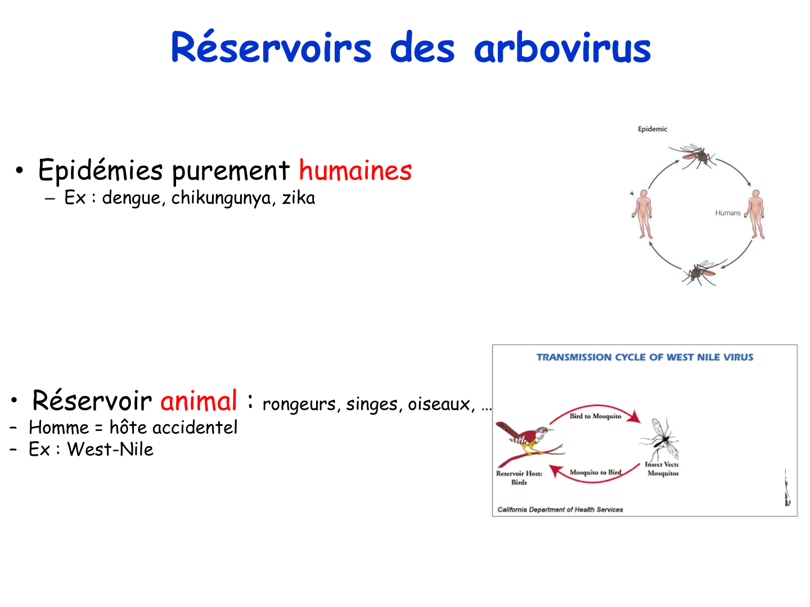
Réservoirs — à gauche un cycle strictement humain (homme ↔ moustique : dengue/chik/Zika), à droite un cycle animal (oiseaux, singes…) où l'homme est un hôte accidentel en cul-de-sac (ex. West-Nile).
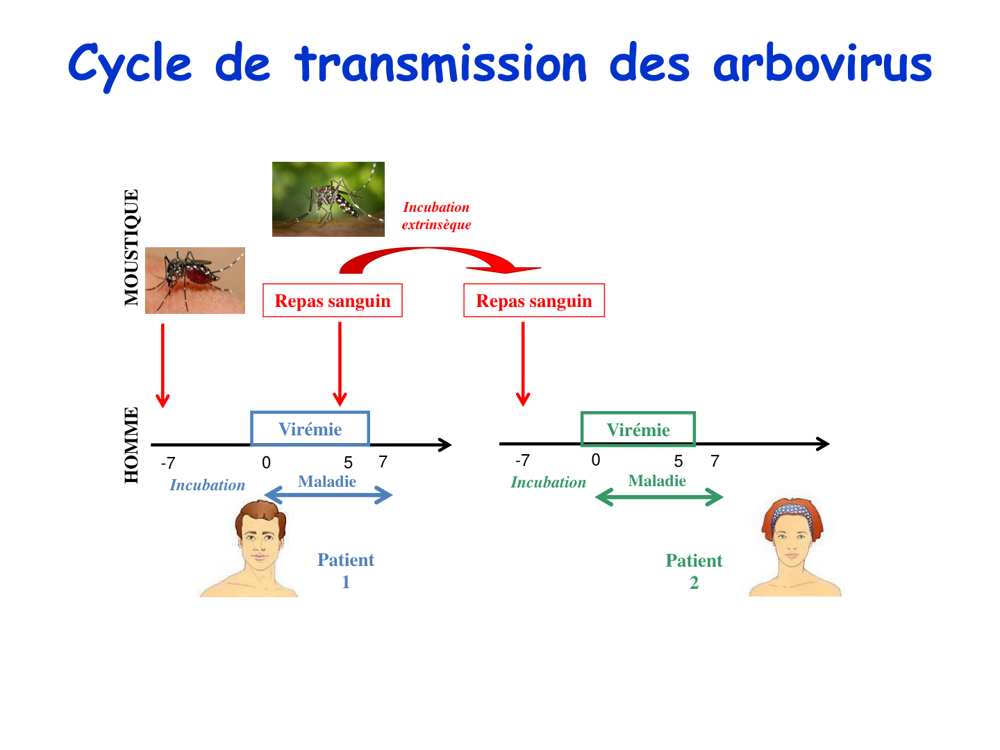
Cycle de transmission (schéma clé) — chez l'homme : incubation (≈ J−7→J0) puis virémie J0→J5-7 = la seule fenêtre où un moustique peut s'infecter lors d'un repas sanguin. Le virus subit ensuite l'incubation extrinsèque chez le moustique avant qu'il ne puisse contaminer un patient 2. ⇒ justifie la protection anti-piqûres la 1re semaine de maladie.
12 · Présentations cliniques (communes)
Personnes asymptomatiques.
Syndrome grippal +++ (le plus fréquent) : érythème, signes digestifs.
Cas graves / complications (+) : méningo-encéphalite · signes hémorragiques, syndrome de choc · hépatite aiguë.
À long terme : asthénie, arthralgies chroniques (chikungunya) · Zika congénital.
13 · Diagnostic & prise en charge
Diagnostic virologique (selon la date de début des signes, DDS)
Technique
Fenêtre
Cibles
RT-PCR sur sang
Précoce : DDS → ≈ J5 (phase virémique)
chikungunya – dengue – zika
Sérologie (IgM / IgG)
Plus tardive : à partir de ≈ J5
chikungunya – dengue – zika
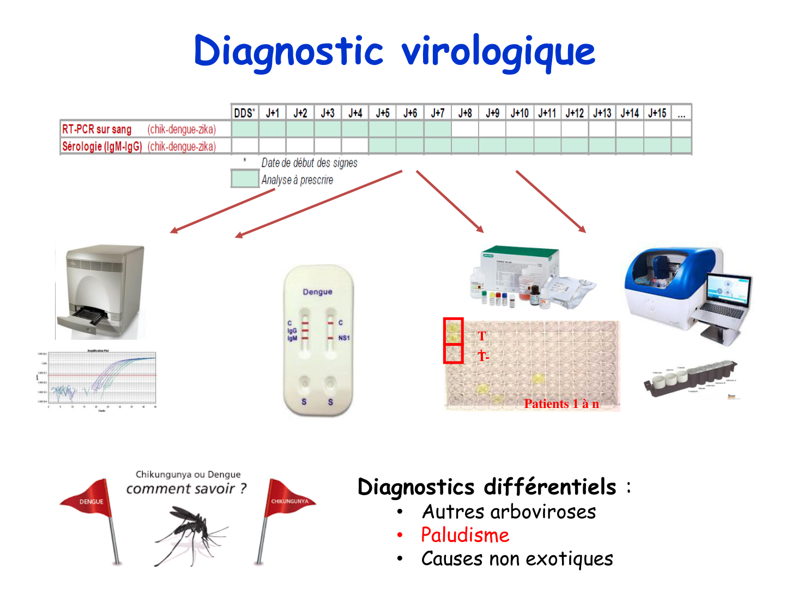
Stratégie diagnostique selon la DDS — RT-PCR sang tant que le patient est virémique (≈ J0→J5), puis sérologie IgM/IgG ensuite. ⚠️ Diagnostics différentiels impératifs : autres arboviroses · PALUDISME (à éliminer systématiquement au retour de zone d'endémie) · causes non exotiques.
Prise en charge des patients
Traitement symptomatique : paracétamol — PAS d'aspirine (risque hémorragique).
Hospitalisation selon critères de gravité clinico-biologiques → identification des signaux d'alerte ++.
Conseils anti-piqûres de moustiques (surtout la 1re semaine = phase virémique → éviter la transmission secondaire).
14 · Prévention
Vaccination (selon l'arbovirus)
Maladie
Vaccin
Indication / particularité
Fièvre jaune
Stamaril®
± obligatoire selon les pays
Encéphalite japonaise
Ixiaro®
Voyages en zone rurale, expatriés
Encéphalite à tiques (TBE)
Ticovac®, Encepur®
Zones d'endémie
Dengue (quadrivalent DENV 1-4)
Dengvaxia® / Qdenga®
Dengvaxia : sur-risque d'hospitalisation chez les enfants sans antécédent d'infection · Qdenga : reco HAS pour Antilles, Guyane, Mayotte, Réunion
Chikungunya
Ixchiq® (vivant atténué)
Disponible fin 2024
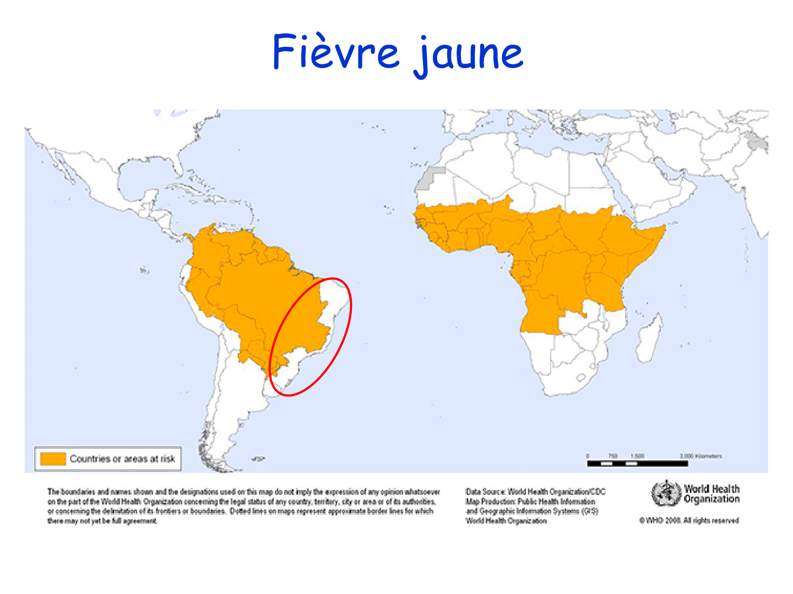
Fièvre jaune — répartition en zone intertropicale (Afrique + Amérique du Sud). Vaccin Stamaril® (vivant atténué), exigé/recommandé pour ces zones.
Expansion du moustique tigre (Aedes albopictus) : présent en Corse dès 2004 → quasi-totalité de la métropole en 2026 → risque de transmission autochtone en métropole.
Critères dengue : fièvre > 38,5 °C de début brutal + ≥ 1 signe algique + ≥ 1 critère biologique (RT-PCR ou test NS1 ou IgM + ; séroconversion ; × 4 des IgG sur 2 prélèvements distants).
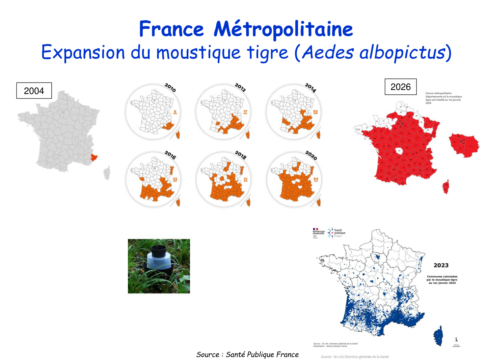
Expansion d'Aedes albopictus en France métropolitaine — de la Corse (2004) à la quasi-totalité du territoire en 2026. Conséquence : un cas importé virémique peut désormais déclencher des cas autochtones presque partout en métropole.
Données France 2025 (01/05 → 30/11/2025)
Arbovirose
Cas importés
Cas autochtones
Dengue
2389
30 (11 foyers)
Chikungunya
2398
809 (79 foyers, 1 à 144 cas/foyer)
Zika
18
—
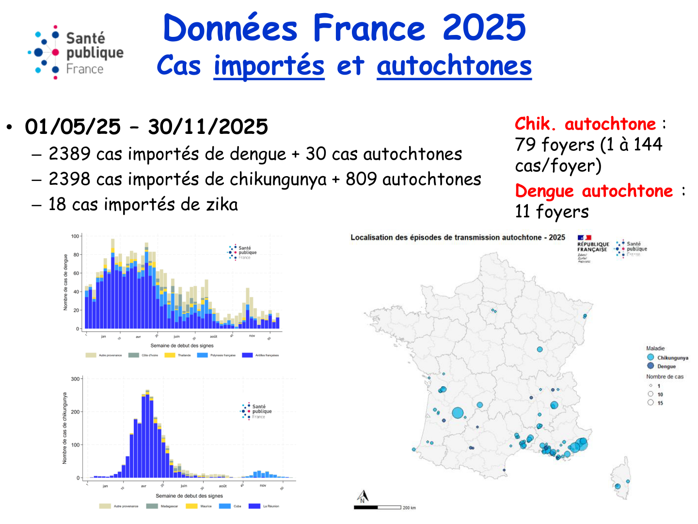
Données France 2025 — beaucoup de cas importés (retour de voyage) ; les cas autochtones apparaissent l'été (activité du vecteur), groupés en foyers. 2025 = flambée inhabituelle de chikungunya autochtone (809 cas).
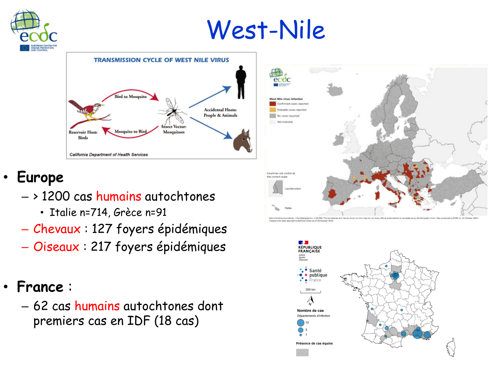
West-Nile — cycle oiseau ↔ moustique Culex, l'homme et le cheval = hôtes accidentels. Europe 2025 : > 1200 cas humains autochtones ; France : 62 cas, dont les premiers cas en Île-de-France (18).
16 · Fièvres hémorragiques virales (FHV)
Classification
Famille
Genre
Réservoir
Espèces
Paramyxoviridae
Henipavirus
chauve-souris
Virus Hendra, Virus Nipah
Bunyaviridae
Hantavirus
rongeur
Hantaan, Seoul, Puumala, Sin Nombre
Arenaviridae
Lassa, Machupo, Junin, Guanarito, Sabia
rongeur
Fièvre de Lassa, FH de Bolivie / d'Argentine / vénézuélienne / brésilienne
Filoviridae
Marburg, Ebola
chauve-souris, singe (présumé)
FH de Marburg ; Ebola-Zaïre, -Soudan, -Reston, -Côte d'Ivoire
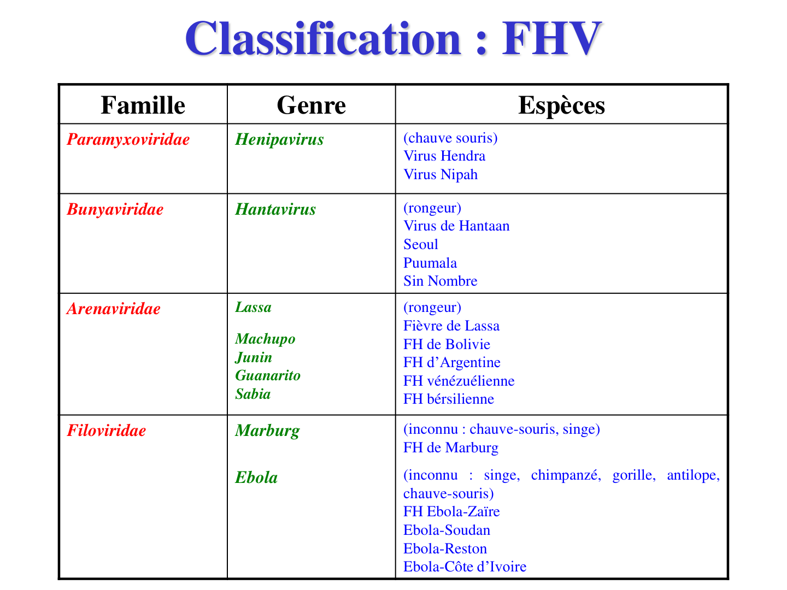
Tableau classification FHV — à retenir par le réservoir : rongeurs (Hantavirus, Arenavirus/Lassa) vs chauves-souris (Filovirus Ebola/Marburg, Henipavirus). Le réservoir conditionne le mode de contamination humaine (≠ vectoriel).
Hantavirus
Transmission par les rongeurs ; incubation 6–42 jours.
Hantavirus — contamination par inhalation d'aérosols d'excréta de rongeurs (pas de vecteur). Incubation 6–42 j ; deux grands tableaux selon la zone : cardio-pulmonaire (Amériques) ou FHSR rénale (Europe/Asie).
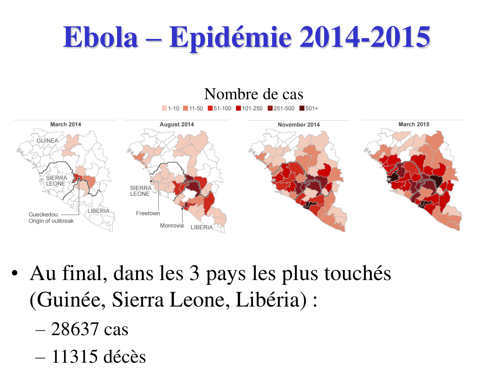
Ebola — épidémie 2014-2015 (Afrique de l'Ouest) : la plus grande connue, 28 637 cas / 11 315 décès (Guinée, Sierra Leone, Libéria). Illustre la létalité élevée des Filovirus et l'enjeu de santé publique internationale (PHEIC).